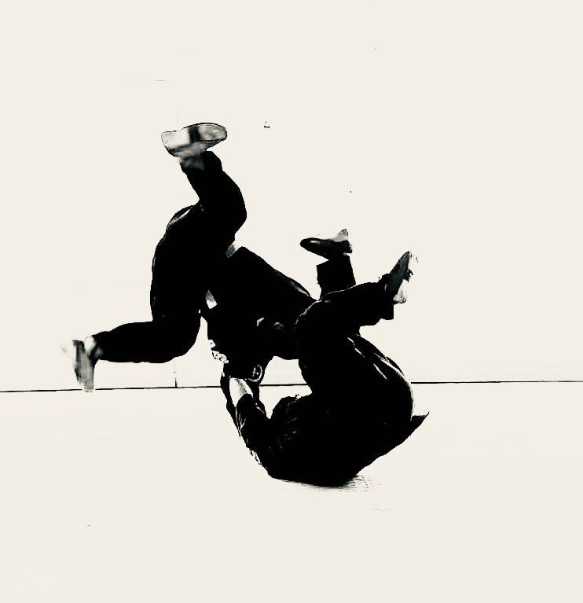
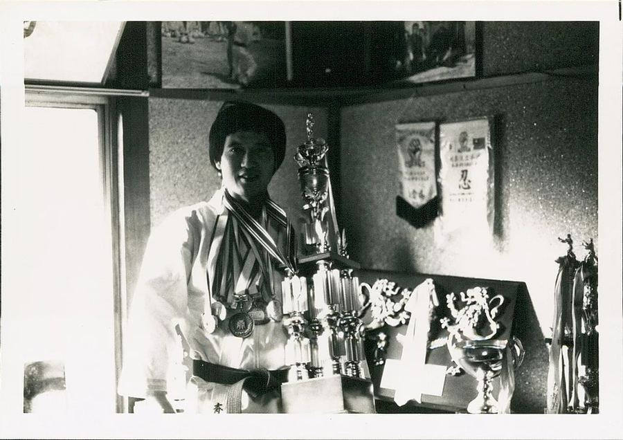
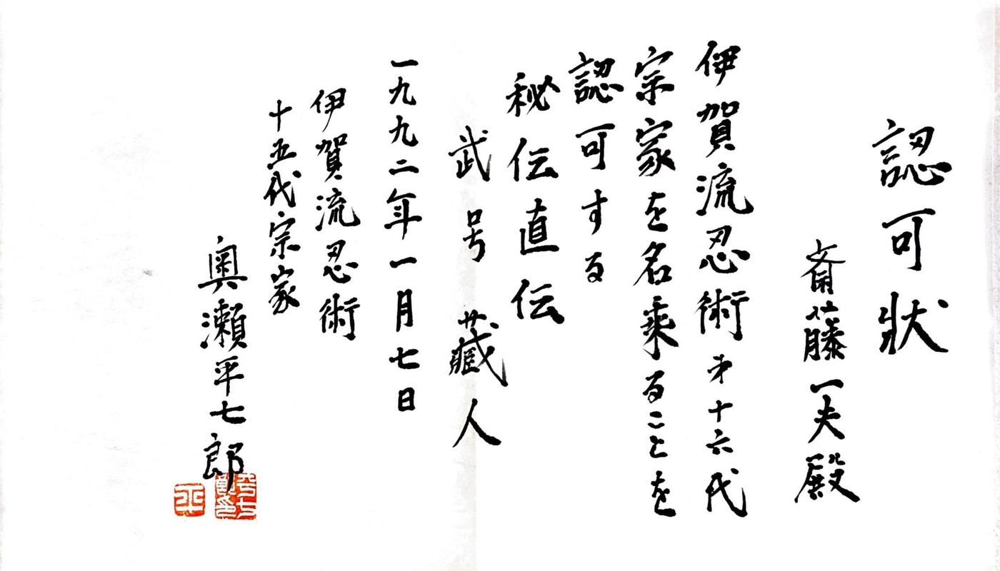
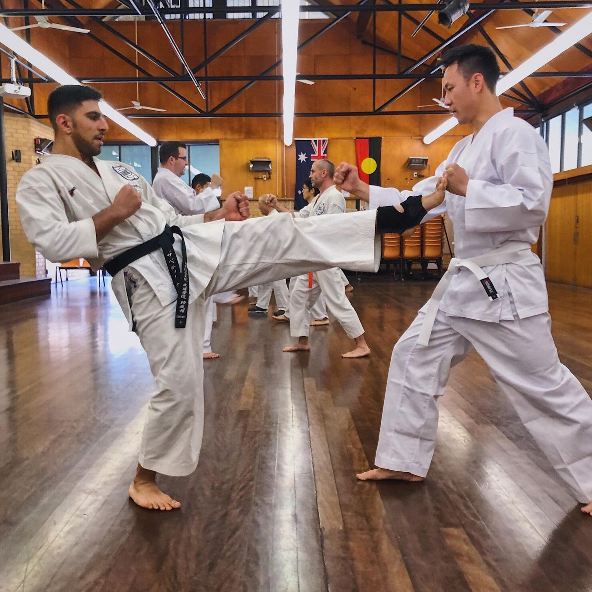

Lane Cove, Sydney · est. 1978
Train for years,
not for seasons.
A traditional Japanese dojo, founded by Kazuo Saito, who migrated from Tokyo to Sydney in 1978. Goju-Ryu Karate for kids and adults, and Iga Ryu Ninjutsu.

Three paths
Choose where you begin.
- per month, all classes
- $155
- annual membership and insurance (pro-rated)
- No
- lock-in contracts
Timetable
The week at the dojo.
151 Burns Bay Road, Lane Cove. Your first class: comfortable sport clothes. Fundamentals first, aiming for calmness and grounding.

The Saitos
“If you can master suffering, you can master life.”
Kazuo Saito · 10th Dan Soke

Harrison Saito, and what comes next
Harrison, Kazuo’s son, continues the lineage with a clear responsibility: that Shinbukan remains a place where people can train for years. Structure, control and clarity, while keeping intensity and tradition. A calm standard: composure under pressure, not theatrics.
Our instructors
Fourteen teachers. One standard.
Personal training available upon request.

Your first class is free
Come and train once.
- Dojo
- 151 Burns Bay Road, Lane Cove NSW 2066
- Phone
- 0417 884 131 Harrison Saito